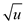
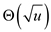
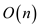
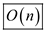

a.
Consider the universe size is u. Then, vEB tree contains the following:
• min (minimum element in the tree)
• max (maximum element in the tree)
• Size of the universe, u.
• A pointer to summary, .
• An pointers to trees.
Creating an empty vEB tree:
• vEB-TREE-CREATE procedure recursively calls itself to create ( That is, trees + one summary tree ,). This operation is represented by .
• And moreover, the vEB-TREE-CREATE procedure sets the fields like min, max in the tree. This operation takes.
Consider that is the time required to create an empty vEB tree, then the running time can be characterized for operation on vEB tree as follows:
b.
Show the recurrence relation.
The solution:

=
Since,
.
Therefore,
c .
The following is the modified version of the vEB-TREE-INSERT :
RS-vEB-TREE-INSERT  :
:
//check the base case empty tree
1. if T.min==NIL
//insert the value in the blank tree
2. RS-vEB-EMPTY-TREE-INSERT(T,x)
//check if the value is less than the current minimum
3. if
//exchange the values if true
4. exchange x with T.min
//find the appropriate location for the element
//check if sub widget sub is nonempty
5. if min
6. RS-vEB-TREE-INSERT
7. else
//make the element minimum for the new sub widget
min
8. RS-vEB-TREE-INSERT
//check if the element is greater than the current maximum
9. if x>T.max
10. T.max=x
The algorithm recursively calls itself either in line 6 or line 8. The remaining part of the procedure takes O(1). Therefore, the recurrence have the solution of .
This takes time to insert x into the RS-vEB tree T.
d.
The following is the modified version of the vEB-TREE-SUCCESSOR:
VEB-SUCCESSOR :
2. then return
3. if low 
4. then
5. return high
6. else
7. return
This takes time.
e.
The procedure RS-vEB-TREE-INSERT recursively calls itself either in line 6 or line 8. Since, the uniform hashing is considered, the time required to insert a value into hash table is O(1).Thus, the remaining part of the procedure takes O(1). Therefore, the running time can be characterized as .
Consider 
Consider S(m)=T(2m)
By case 2 of masters theorem, the above recurrence has the solution of .
Even the procedure RS-vEB-TREE-SUCCESSOR runs in time, because it also calls itself in line 4 or 6, and the remaining part of the procedure executers in constant time.
Hence, the assumption of simple uniform hashing, the total cost goes up to.
f.
It is required to show that RS-vEB tree structure requires space to store n elements. The procedure RS-vEB-TREE-INSERT takes time to insert one element. Therefore, it takes time. Therefore, the time space required for RS-vEB tree is .
Hence, the space is .
g.
Creating an empty vEB tree:
• vEB-TREE-CREATE procedure recursively calls itself to create ( That is, trees + one summary tree ,). This operation is represented by .
• And moreover, the vEB-TREE-CREATE procedure sets the fields like min, max in the tree. This operation takes.
Consider that is the time required to create an empty vEB tree, then the running time can be characterized for operation on vEB tree is as follows:
The above recurrence have the solution .
Creating an empty RS-vEB tree:
Generally, to create an empty vEB tree , it requires time. But creating an empty RS-vEB tree is simpler and faster than creating vEB tree. The reason is that, it implements the clusters using the hash table. Therefore, records can be accessed faster in hash tables.
The structure used for creating the empty RS-vEB tree is defined in the problem. As this structure shows that there are no loops or recursions while creating the tree. So the procedure would intuitively run in the constant time.
a.
It is known that the y-fast tries make use of space. Since the storage structure of the tries resemble the binary tree. So, if the domain ranges over the value u, the height of the tree would become .
In each node, prefix of the binary representation of each element is stored. That is, if u=16, for each element binary values are to be stored in the hash table. So, the space required to store a value is.
Therefore, the total space required for storing n values is of. Where, the total number of value is n and u is the domain of values.
b.
Accessing MINIMUM and MAXIMUM in constant time: According to the preliminary structure of the y-fast tries, the perfect hash table stores a value and it’s all prefixes of the binary representation.
To ensure that the MINIMUM and MAXIMUM can be fetched in the constant time, the values in the hash table should be in the ascending order. Then, just one operation is required to access the first value from the table, which is the minimum value in the set. Similarly, just one operation is required to access the last value from the table, which is the maximum value in the set.
Accessing MEMBER, PREDECESSOR and SUCCESSOR:
MEMBER operation finds whether an element exists in the tree or not. MEMBER operation would be performed by searching each item in the tree. Now as the BST is being used to retain the values and the depth of the y-fast tries is.Once the appropriate tree and the item are found that might be returned in constant time. this takes.
PREDECESSOR(x) operation finds a maximum key value that is not as large as the current key value x. To perform this operation, first of all, the key x has to be find the node that matches x. Then, it is required to back up to a node that has 0 in the right side. That is, the searching will span over two binary search trees. One that is being traversed when the representative has to be found and the other that is searched when the predecessor has to be found.
While traversing up, the worst possible time would be and the same would be while coming down. The breadth of the search procedure would be the distance between the concerned trees and this takes.
SUCCESSOR(x) operation finds the key with the least value larger than the current key x. The running time of this operation would be equal to the running time of the predecessor operation.
INSERT and DELETE: Insert operation inserts a new element in the y-first tries. Since the values in the y-first tries are stored as key value pair. In order to insert the value, first of all it is to be determined what binary search tree the value should be inserted in. after this the successor of the key has to be found so that the appropriate location for the key being inserted is to found. Once the insertion is done, it has to be ensured that the number of keys in the tree does not exceed the limit of.
Similarly, deletion also takes time to delete an element form the table.
c.
It is to be shown that modified data structure that is a
y-fast tries requires space to
store n elements. Each widget on itself leaving the sub
widgets and its summary widgets occupies space. A
group can be stored if and only if its minimum field is occupied by
and it is respective element. The hash table expands the space by a
fixed term or a constant factor by amortizing over the fixed cost
of each sub elements. So, for 1 element, it is  and for two
elements, it is and so on.
So the tree with the n elements would require
and for two
elements, it is and so on.
So the tree with the n elements would require space.
space.
d.
Since there are n/ clusters and size of each cluster is, to find a cluster that has a minimum value and searching the minimum value takes. Similarly, the time required for searching the maximum is also .
Therefore, the time required to find a minimum value as well as maximum value is.
e. It is to be shown that member operation in a y-fast tries requires time.
Algorithm:
MEMBER
1. if or
or
2. return true
3. else if
4. return FALSE
5. else
return y-fast tries member
Since:
Now:
Now, changing the variables:

So,
The above relation depicts the running time checking for each and every element whether it is a member or not takes time
f. While finding the predecessor the representative of the tree that the data item is in is to be reached. After this, process of locating the element in the tree can be consummated in time.
Finding the appropriate representative from the
x-fast-tries would be done in the time, where
x is the size of the tree. So, the time taken in finding the
predecessor would be done in  time.
time.
g. Insert operation: For inserting a key or
a value pair, it must be known, which balanced binary search tree
the key has to be inserted in. First, find the tree  having the
successor of the key. Now, insert key into
tree. Searching
for the successor of key takes
having the
successor of the key. Now, insert key into
tree. Searching
for the successor of key takes
 time; as
observed in the previous section. For the insertion, the growing
universe size despite rapid change would not leave a great effect
on the running time.
time; as
observed in the previous section. For the insertion, the growing
universe size despite rapid change would not leave a great effect
on the running time.
This is because the value of the function would increase extremely slowly and that is why the time required to run the procedure would be. After insertion it has to be made sure that the tree is not violating the basic requirement for the tree. For this to happen consider the number of elements in the tree is more than. In this case, it needs to be split up. This would take time. The representative of the previous tree has to be deleted and the representatives of the new formed trees have to be inserted in the x-fast tries.
Since these tasks would be performed in the constant amount of time, the time consumed would be. But practically this case would occur very rarely, precisely aftervalues, so the time taken in the insertion would be constantly amortized and thus would be equal to .
Delete operation: Deletions are done as same as insertion
in y-fast tries. The element has to be first located
and if found the element should be deleted from the tree. Searching
the element would take the time equal to what is taken in
performing the MEMBER operation, that is. But just
like the insertion the function very slowly, though the increment
in the value of input can be rapid. So, keeping this slow growth
rate in mind the complexity of deletion process can be bounded with
the omega notation of the function and that is.
After deleting the value, it is to be checked if the tree violates the fundamental rule that there must be at least elements. If the same is not happening, the tree would have to be merged with its predecessor tree and the successor. After the merging, the tree has to be checked again if that is violating the property of having the maximum elements. So, the time taken in this entire procedure would be . But the occurrence of this all is rare just like the insertion. So the deletion for the y-fast tries would take the constant amount of amortized time and that would be .
h. Now, the requirement, that each of the y-fast tries must have elements, should be relaxed. That means this rule should be made less strict for the tries. The rule can be modified to make the tries has at most elements. In any case the tree can have elements less than this. After this rule is applied, the INSERT and DELETE operation would run like the ones before. In the best and average case the operations can be consummated in less time, whatsoever.
In the worst case, when the concerned tree has the largest
number of elements and that being, the time
required to run the procedure would be. Since the
growth rate of the function would be too slow in this case, too.
So, the operation would be performed in the constant amortized
time. As far as the other tasks are concerned, the asymptotic
runtime will not be affected. The time taken to run the procedure
is dependent on the size of the input. For the worst case, the
input size would be .